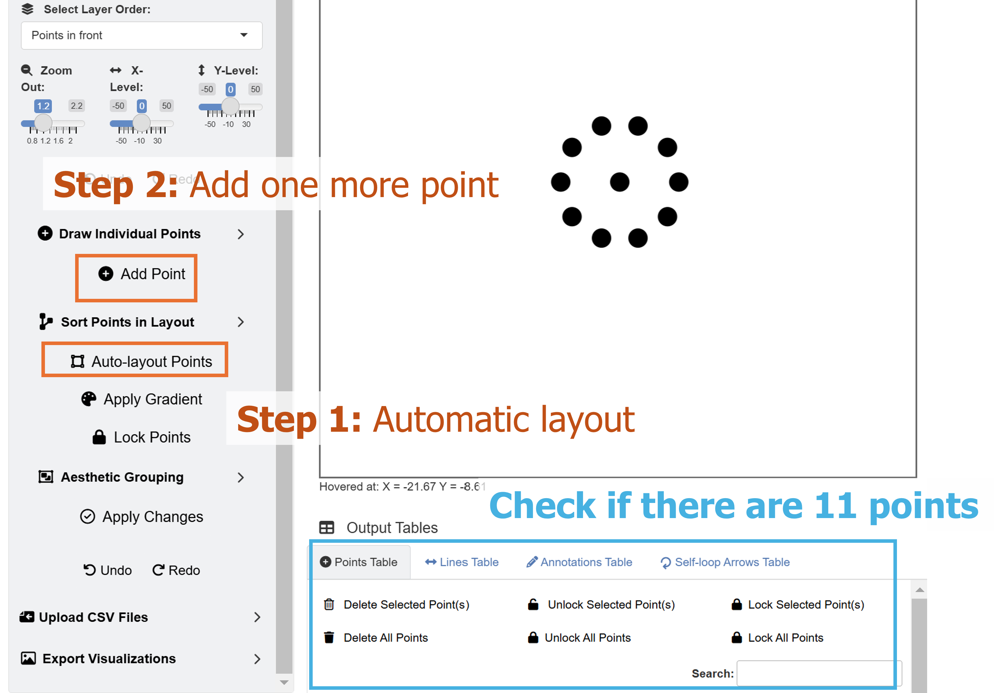
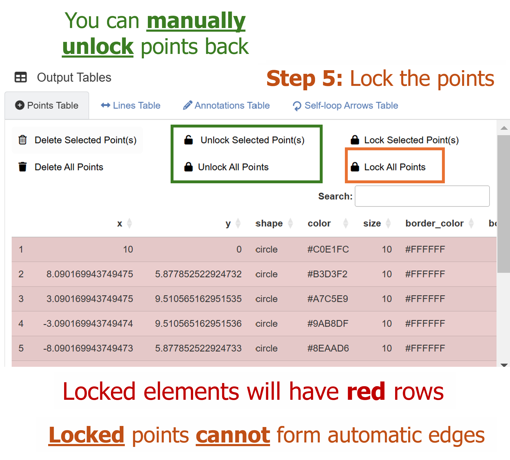
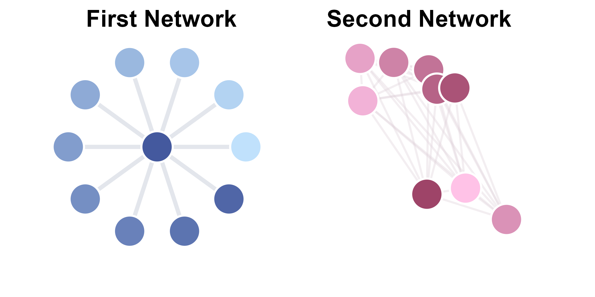

The previous chapter discussed how each graphical element could be drawn using the ggsem app one-by-one. Here, we discuss about drawing multiple points (nodes) or lines (edges) at once. This would allow users to quickly draw a network using the app.
Let’s run the app locally using the code below (faster than online: https://smin95.shinyapps.io/ggsem/):
ggsem::launch()Network Layouts of Points (Nodes)

The ggsem app provides numerous layouts, some of which are derived from the igraph package. For instance, if users draw 10 points by clicking the Add Point button 10 times, and choose a certain layout, these points can be sorted into a network configuration using the inputs in the Draw Networks menu.
Let’s start by creating 10 points by clicking the Add Point button 10 times. Since they are all located at the origin (X = 0, Y = 0), they are all overlapped on the same plotting area. So you will only be able to see one black point. To confirm whether there are 10 points, check the Points Table and see if there are 10 rows total (blue rectangle in the figure).
In the Draw Networks part of the menu, there are some important inputs. These are:
Layout Type: There are eight provided layouts: 1) Circle, 2) Grid, 3) Random, 4) Star, 5) Fruchterman-Reingold, 6) Kamada-Kawai, 7) Horizontal Straight Line, and 8) Vertical Straight Line.
Point Distance: Relative distance between two neighboring points/nodes.
Center X Position: The X coordinate of the network’s center.
Center Y Position: The Y coordinate of the network’s center.
Gradient Start Color: The first color of the gradient.
Gradient End Color: The second color of the gradient.
There are three additional buttons. These are:
Auto-layout Points: If you click this button (and if there are at least two unlocked points), the points will be arranged into a specific configuration based on the Layout Type input.
Apply Gradient: If you click this button (and if there are at least two unlocked points), the filling color of the points will have a gradient palette.
Lock Points: If this button is pressed, all existing points in the Points Table will become locked, becoming immune to the effect of subsequent effects of Auto-layout Points and Apply Gradient. In other words, if a batch of points has been arranged appropriately, click this button to keep its characteristics (position and color).

Now that we know what these inputs do, let’s start by setting the layout of the 10 points as:
- Layout Type: Circle
If you click the Auto-layout Points button, the points will be sorted into a circle, whose center is at the origin (X = 0, Y = 0) as specified. Since, there is an empty space in the middle, we can add one more point at the center (X = 0, Y = 0) by clicking the Add Point button.
Next, we can set the gradient filling color of all points by setting the inputs as:
Gradient Start Color: #C0E1FC
Gradient End Color: #44599E
since all 11 points are currently unlocked (see locked column in Points Table), the gradient colors can be applied to them by clicking Apply Gradient.
Now, we have a small blue-colored network of eleven points.
Connecting the Points in a Network

To connect the points in the navy network, we can add lines, so we set (at the top dropdown menu):
- Choose Element Type: Line
There are many ways in which the poinst can be connected with lines (edges) using the ggsem app. Let’s shift our attention to the dropdown menu of Choose Edge Connection Type under Draw Networks. There are several options:
Fully Connected: Connects edges between each pair of all nodes
Nearest Neighbor: Links each node to its closest neighbor.
Connect to Central Node: Links peripheral nodes to a central node (geometric center based on coordinates).
Connect to Particular Node: Links all nodes to a particular node of choice. When choosing this menu, users should supply the ID number (from the Points Table’s first column) of the point in Select Central Node.
Random Graph: Links nodes in a random fashion based on the Erdos-Renyi model. It is different each time.
Here, as practice, instead of Connect to Central Node, we can choose the option Connect to Particular Node, find the ID number of the central point in the Points Table, and connect all peripheral nodes to the central one.
It turns out the ID of the central node is 11 as it has the coordinate of X = 0 and Y = 0. We can choose the aesthetics of the lines that will automatically generated as:
Edge Color: #CACFDB
Edge Width: 2
Edge Alpha: 0.5
Edge Spacing controls the space between nodes and endpoints of edges.

Next, we will create another network using these layout functions. But before that, we will need to lock these points, so that later usages of **Draw Networks* functions will not affect their positions and edge connections.
To do so, we go back to the Point menu, and click the Lock Points button (orange rectangle) under Draw Networks.
Drawing a Second Network

For the second network, let’s add 11 points by clicking the Add Point button 11 times. Make sure you check the Points Table and see if there are additional 11 rows (22 rows total).
Set the layout of the points as:
Layout Type: Random
Point Distance: 8
Center X Position: 30
Center Y Position: 0
Gradient Start Color: #FFC2E7
Gradient End Color: #9E4468
Then, click the Auto-layout Points and Apply Gradient buttons.
Then, we adjust the focus of the plotting window by setting:
Zoom Level: 1.4
Horizontal Position: 16
Vertical Position: 0

Now, we go back to the Line menu, and automatically generate lines. We can choose the option Fully Connected with these aesthetics:
Edge Color: #DBCAD3
Edge Width: 1
Edge Alpha: 0.3
Then, we lock the points in the Point menu by clicking Lock Points, which will then stabilize the second network into the plotting space.
We can then save the CSV files for the points and lines, and load them in RStudio using a typical ggplot2 workflow.
Modifying the Plot from ggsem app in ggplot2 Workflow
As in the first chapter, we can modify the plot output from the ggsem app by usihg ggplot2 functions directly.
library(tidyverse)
library(ggsem)
# CSV files from ggsem app
points_data <- read_csv("https://www.smin95.com/points2.csv")
lines_data <- read_csv("https://www.smin95.com/lines2.csv")
p3 <- csv_to_ggplot(
points_data = points_data,
lines_data = lines_data,
zoom_level = 1.4, # From the ggsem app
horizontal_position = 14, # From the ggsem app
vertical_position = 0,
element_order = c("lines", "points")
) # order priority: lines < pointsWe use csv_to_ggplot() to convert the CSV outputs from
the shiny app into a ggplot object. Here, we set the
order of elements so that the points are more front than the lines using
the argument element_order. The lines is
written first, followed by points, so points
are more recently applied, and hence takes the order priority. We use
the same zoom_level, horizontal_position and
vertical_position as those in the ggsem
app.
Notice that we do not have CSV files for text annotations and
self-loop arrows. So here, we do not provide them, and the
csv_to_ggplot() still runs smoothly. So, it is unnecessary
to load empty CSV for a class of graphical element if it was not
previously added in the app.
We can save the figure as a PNG file to verify whether it is
identical to the one we have drawn on the ggsem Shiny app. Here, we set
width = 9 and height = 9 as the dimension of
the exported image file. This is what the figure looks like:
ggsave("p3.png", p3, width = 9, height = 9)
We can also add text annotations to our graphical output using
typical ggplot2 functions, such as annotate().
First, we extract the plot’s ranges of x-axis and y-axis using
get_axis_range().
get_axis_range(p3)
#> $x_range
#> [1] -16.8 44.8
#>
#> $y_range
#> [1] -30.8 30.8Now that we know the ranges, we can decide where to exactly add the text annotations. We will add texts on top of each network.
p4 <- p3 + annotate("text",
label = "First Network", x = 0, y = 16,
fontface = "bold", size = 8
) +
annotate("text",
label = "Second Network", x = 29, y = 16,
fontface = "bold", size = 8
)
Next, we can remove the extra white space around the networks by reducing the ranges of x- and y-axes.
p4b <- p4 + coord_cartesian(ylim = c(-12, 21), xlim = c(-9, 40))Then, save the figure using ggsave() with
width = 9 and height = 6.3 (after some trials
and error!).
ggsave("p4b.png", p4b, width = 9, height = 6.3)
Hacking the CSV Outputs from ggsem app
You can also hack the CSV output values. Here, I will separately plot each network and then combine them using the patchwork package.
I will split points_data and lines_data
data frames. We know that the first network has eleven points and ten
lines, so we include them in points_data1 and
lines_data2, and include the rest in
points_data2 and lines_data2.
library(patchwork) # install.packages('patchwork')
points_data1 <- points_data[1:11, ] # First network's point
points_data2 <- points_data[12:nrow(points_data), ]
lines_data1 <- lines_data[1:10, ] # First network's lines
lines_data2 <- lines_data[11:nrow(lines_data), ]Next, we separately convert the CSV outputs into two networks. Notice
that for these two plots, I reduce the zoom_level (from 1.4
to 0.7) to remove the surrounding empty space and shift the
horizontal_position so place the network in the plotting
space’s center. The change in the zoom_level will alter the
looks slightly.
net1 <- csv_to_ggplot(
points_data = points_data1,
lines_data = lines_data1,
zoom_level = .7, # Zoom-in to remove extra space
horizontal_position = 0, # 0 because blue network's center is at X = 0, Y = 0
vertical_position = 0,
element_order = c("lines", "points")
)
net2 <- csv_to_ggplot(
points_data = points_data2,
lines_data = lines_data2,
zoom_level = .7, # Zoom-in to remove extra space
horizontal_position = 30, # 30 because red network's center is at X = 30, Y = 0
vertical_position = 0,
element_order = c("lines", "points")
)Then, we can add title using ggtitle() to each of the
plots.
net1b <- net1 + ggtitle("First Network") +
theme(plot.title = element_text(hjust = 0.5)) + # Title is aligned to the center
theme(plot.title = element_text(size = 24, face = "bold")) # Font size of the title
net2b <- net2 + ggtitle("Second Network") +
theme(plot.title = element_text(hjust = 0.5)) +
theme(plot.title = element_text(size = 24, face = "bold"))Next, using the + operator from
patchwork, we combine net1 and
net2 into one ggplot2 object.
net_tgd <- net1b + net2bWe can now save net_tgd into an image file using the
ggsave() function with width = 12.5 and
height = 8.
ggsave("net_tgd.png", net_tgd, width = 12.5, height = 8)
Labelling the Nodes with ggplot2 workflow
I will now discuss how we can label nodes using a
ggplot2 workflow. Here, we will label
net1. We start by creating a data frame of text labels and
their X and Y coordinates.
texts_data <- data.frame(
x = points_data1$x,
y = points_data1$y,
label = paste0("S", 1:nrow(points_data1))
)
head(texts_data)
#> x y label
#> 1 10.00000 0.000000e+00 S1
#> 2 8.09017 5.877853e+00 S2
#> 3 3.09017 9.510565e+00 S3
#> 4 -3.09017 9.510565e+00 S4
#> 5 -8.09017 5.877853e+00 S5
#> 6 -10.00000 1.224606e-15 S6The data frame texts_data contains three columns: 1)
x: contains x coordinates of point_data1, 2)
y: contains y coordinates of point_data1, 3)
label: contains character strings.
Next, we use geom_text() to label the text annotations
for each row (observation) of texts_data. We map the
coordinates and labels within aes() to the columns of the
data frame.
We can improve the visibility of the text on each node by applying
unique color and adjusting its text size. To use custom colors in
geom_text(), scale_color_identity() should
also be used to ensure that the colors are properly rendered.
cList <- c(
"#494949", "#494949", "#5B5B5B", "#5B5B5B", "#EBEBEB",
"#EBEBEB", "#EBEBEB", "#EBEBEB", "#EBEBEB", "#EBEBEB",
"#FDFDFD"
) # text color for each node label
texts_data$color <- cList
net1 +
geom_text(aes(x = x, y = y, label = label, color = color),
data = texts_data,
fontface = "bold", size = 5
) +
scale_color_identity()